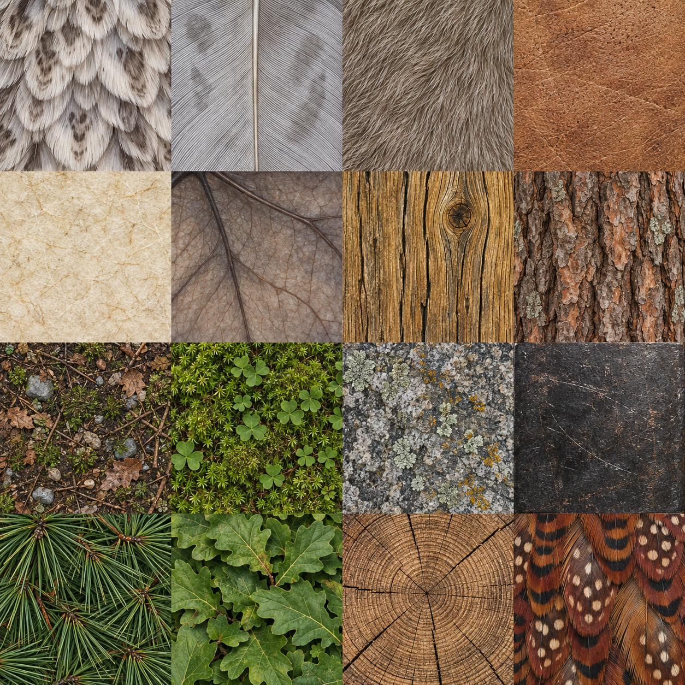

Shootout, in the wood
Textured terrain and planting, a flexing laminated bow, layered feathers, distinct animal silhouettes and a more expressive Great Owl. These are captures from the actual Three.js game.
Implementation and verification · Image generation prompt
Before / after
Identical seed, camera and viewport. Move the divider to compare. These composition captures hide the HUD; live HUD and touch controls appear below.

 BeforeAfter
BeforeAfterModel close-ups
All existing target types and the bow, rendered with the generated surface textures.
Weather and phone controls
The generated texture atlas
Sixteen custom image-generated surfaces: feathers, fur, leather, parchment, membrane, timber, bark, earth, moss, stone, iron, needles, leaves, end grain and pheasant plumage. Each tile is cropped into an independent cached texture to avoid bleeding.
